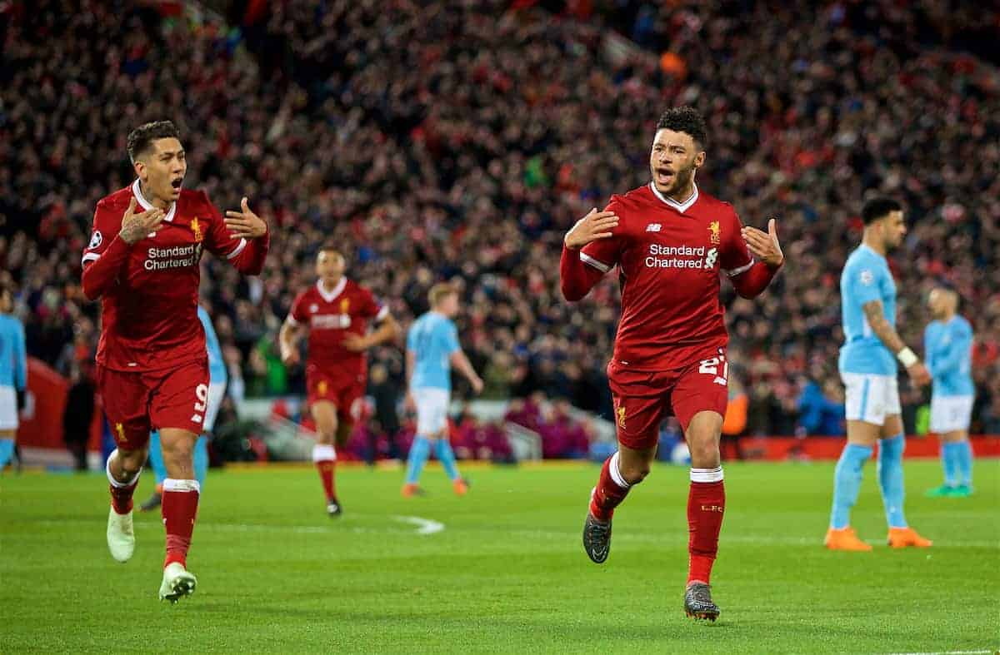

Consultez les matchs et tournois disponibles.
|  |

|
|
Dans le premier match de la journée, le FC Barcelone affrontera le Real Madrid au stade Santiago Bernabeu. Ce classico espagnol est l'un des plus grands événements sportifs au monde, attirant des millions de téléspectateurs du monde entier. Les deux équipes ont une longue histoire de rivalité et de succès, et ce match promet d'être intense. |
Le deuxième match de la journée verra s'affronter Liverpool FC et Manchester City à Anfield. Ces deux équipes de la Premier League anglaise sont actuellement parmi les meilleures du monde. Les supporters attendent avec impatience ce duel entre les Reds de Liverpool et les Citizens de Manchester City, qui pourrait avoir un impact significatif sur le classement. |
Le dernier match de la journée se déroulera en Serie A italienne, où la Juventus affrontera l'AC Milan au stade San Siro. Ces deux clubs italiens emblématiques ont une histoire riche en succès et en compétitions acharnées. Ce match est toujours l'un des temps forts de la saison de Serie A et attirera une grande attention. |